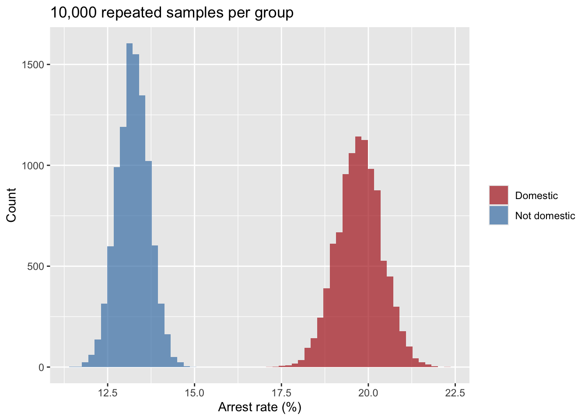
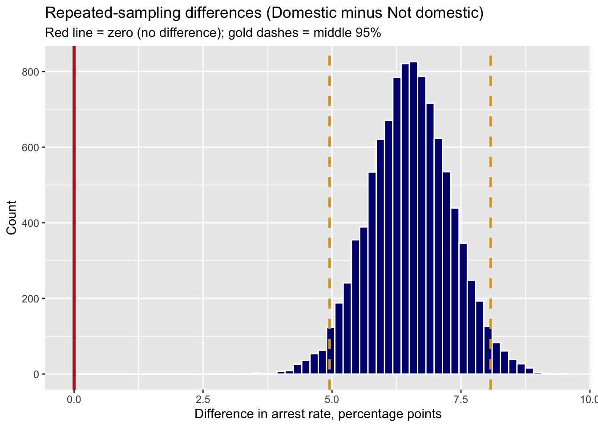
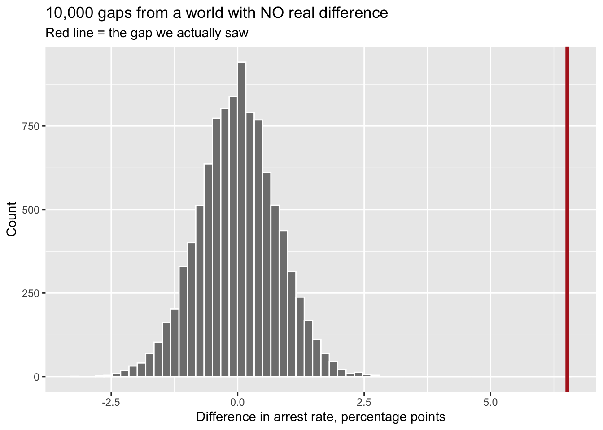

Demo Walkthrough · Session 6
Hypothesis testing, twice — the p-value from prop.test(), the posterior from bayes_prop_test()
What this page is. The Session 6 lecture demos, written down step by step. Every chunk below is self-contained — copy any of them into your own R session and they run as-is. Use this page to catch up after a missed class, or to re-run what happened on screen at your own pace.
What you’ll build
- A real question in percent: among Chicago’s violent crimes, are domestic ones more likely to end in an arrest?
- Repeated sampling of that gap — 10,000 draws — and the same machinery run in a world with no real difference
- The NHST verdict from
prop.test(), and where the same p-value lives in last week’st.test() - The recidivism trial, both ways: \(p = 0.20\) from
prop.test(), a 91% probability the program works frombayes_prop_test() - Back to Chicago with both tools — and what sample size does to each
Setup
The tidyverse, the Chicago incidents, and one new line: source() loads the course’s Bayesian function from the course site. There is nothing to install.
1 · Tonight’s question
Among violent crimes in our sample, are the domestic ones more likely to end in an arrest? Count first, exactly as in Lab 5:
violent |> count(domestic, arrest)# A tibble: 4 × 3
domestic arrest n
<lgl> <lgl> <int>
1 FALSE FALSE 4685
2 FALSE TRUE 714
3 TRUE FALSE 3009
4 TRUE TRUE 740Read four numbers off that table. Domestic: 740 arrests out of 740 + 3,009 = 3,749, which is 19.7%. Not domestic: 714 arrests out of 714 + 4,685 = 5,399, which is 13.2%. A gap of about 6.5 percentage points. Everything below reads the difference one way: Domestic minus Not domestic.
But this is a sample of Chicago’s 2025 incidents, and Session 4 taught us that sample numbers bounce around. Could a gap like this be nothing but bounce?
2 · Pretend we sampled repeatedly
Session 4’s move, applied to both groups at once. Pull out each group’s arrests (a column of TRUE and FALSE), then draw 10,000 repeated samples of each and compute the arrest rate every time:
dom_arrest <- violent$arrest[violent$domestic]
non_arrest <- violent$arrest[!violent$domestic]
reps <- tibble(
Domestic = replicate(10000, mean(sample(dom_arrest, replace = TRUE))),
`Not domestic` = replicate(10000, mean(sample(non_arrest, replace = TRUE)))
)
reps |>
pivot_longer(everything(), names_to = "group", values_to = "rate") |>
mutate(group = factor(group, levels = c("Domestic", "Not domestic"))) |>
ggplot(aes(100 * rate, fill = group)) +
geom_histogram(bins = 60, alpha = 0.7, position = "identity", color = NA) +
scale_fill_manual(values = c("firebrick", "steelblue")) +
labs(title = "10,000 repeated samples per group",
x = "Arrest rate (%)", y = "Count", fill = NULL)
The two piles do not even touch. Subtract, pair by pair, and the difference gets its own pile:
2.5% 97.5%
4.952760 8.074351 ggplot(tibble(rep_diff), aes(rep_diff)) +
geom_histogram(bins = 60, fill = "navy", color = "white") +
geom_vline(xintercept = 0, color = "firebrick", linewidth = 1.2) +
geom_vline(xintercept = ci_rep, color = "goldenrod", linetype = 2, linewidth = 1) +
labs(title = "Repeated-sampling differences (Domestic minus Not domestic)",
subtitle = "Red line = zero (no difference); gold dashes = middle 95%",
x = "Difference in arrest rate, percentage points", y = "Count")
The middle 95% of plausible differences runs from about 5 to 8 points. Zero is nowhere near it.
What if there were no real difference?
Build the boring world on purpose. Give both groups the same arrest rate (the overall 15.9% among violent crimes) by drawing both groups from the full list of violent incidents, and run the same machinery:
obs_gap <- 100 * (mean(dom_arrest) - mean(non_arrest))
null_diff <- 100 * replicate(10000,
mean(sample(violent$arrest, 3749, replace = TRUE)) -
mean(sample(violent$arrest, 5399, replace = TRUE)))
ggplot(tibble(null_diff), aes(null_diff)) +
geom_histogram(bins = 60, fill = "gray50", color = "white") +
geom_vline(xintercept = obs_gap, color = "firebrick", linewidth = 1.4) +
labs(title = "10,000 gaps from a world with NO real difference",
subtitle = "Red line = the gap we actually saw",
x = "Difference in arrest rate, percentage points", y = "Count")
[1] 0Chance alone makes gaps of a point or two. It made a gap as big as ours in none of the 10,000 tries. That count, out of 10,000, is the whole idea of a p-value. Formalize it and you have invented the NHST.
3 · The Null Hypothesis Significance Test, in five steps
- State the null, \(H_0\): the two arrest rates are the same (difference = 0). The boring world.
- State the alternative, \(H_1\): some difference — note how little we commit to.
- Compute a test statistic: the observed gap, measured against how much gaps bounce by chance.
- Ask: how often would a gap this large appear by luck in the boring world? That’s the p-value.
- Verdict: \(p < \alpha\) (usually .05) → “reject \(H_0\).” Otherwise → “fail to reject.”
Notice the machine only weighs evidence against the null — \(H_1\) never gets scored. And be precise about the p-value. It is the probability of data this extreme or more, if the null is true and the model is right. It is not the probability the null is true (that’s \(P(H_0 \mid \text{data})\), which frequentism never computes), not the probability the result “is due to chance,” and not a measure of how big the effect is — with enough data, microscopic effects earn microscopic p-values. Hold that thought.
prop.test() is Lab 5’s function, now with two groups: how many, out of how many, for each. Domestic first:
2-sample test for equality of proportions with continuity correction
data: c(740, 714) out of c(3749, 5399)
X-squared = 69.744, df = 1, p-value < 2.2e-16
alternative hypothesis: two.sided
95 percent confidence interval:
0.04929331 0.08098520
sample estimates:
prop 1 prop 2
0.1973860 0.1322467 Reading the verdict, bottom up. prop 1 and prop 2 are the two rates, 19.7% and 13.2%; Domestic is first because we typed it first. The 95 percent confidence interval, about 4.9 to 8.1 points, is last week’s skill. And p-value < 2.2e-16 is R’s way of writing a decimal point followed by fifteen zeros: in the boring world, a gap like ours essentially never happens. Under .05 — “statistically significant.” Reject the null.
The same line lives in t.test(). Last week’s homework compared two means; you read the interval, and the p-value was sitting right above it the whole time:
Welch Two Sample t-test
data: injuries by intox
t = 12.489, df = 1732.6, p-value < 2.2e-16
alternative hypothesis: true difference in means between group Intoxicated and group Sober is not equal to 0
95 percent confidence interval:
0.3259893 0.4474533
sample estimates:
mean in group Intoxicated mean in group Sober
1.1300971 0.7433758 One caution: everything above was scored against one curve — the null — and that tidy curve itself assumes large-enough samples, independent observations, and a model that fits the data. NHST never asks what the alternative world looks like, and researchers rarely test the assumptions before trusting the p-value. (The lecture’s sketch figures make this vivid — see the Session 6 slides.)
4 · The recidivism trial, both ways
Typical recidivism runs about 60%. A randomized trial of a reentry program puts 100 people in treatment and 100 in control. Outcomes: treatment 40/100 reoffend, control 50/100. Did the program reduce recidivism? Ten percentage points is exactly the kind of effect a city would fund.
The frequentist answer. Treatment first, so the difference reads Treatment minus Control:
2-sample test for equality of proportions with continuity correction
data: c(40, 50) out of c(100, 100)
X-squared = 1.6364, df = 1, p-value = 0.2008
alternative hypothesis: two.sided
95 percent confidence interval:
-0.24719748 0.04719748
sample estimates:
prop 1 prop 2
0.4 0.5 \(p = 0.20\) — not statistically significant, and the interval (about −25 to +5 points) has zero inside it. Honest reading: a 10-point gap like this could plausibly occur even if the program did nothing. The grant report writes itself — “no significant effect” — and the program probably dies there.
The Bayesian answer. A Bayesian has to say, out loud, what they believed before the data. That is the prior. We said it already: recidivism typically runs about 60%. How firmly? Say about as firmly as if we had already watched 10 people: 6 reoffended, 4 did not. In R that whole belief is two numbers, prior = c(6, 4). The function adds the trial’s 200 real people to our 10 imaginary ones; that adding-up is the posterior, what we believe after the data.
Bayesian test of two proportions
data, group 1: 40 of 100 (40.0%)
data, group 2: 50 of 100 (50.0%)
prior: 6 yes, 4 no (about 60%, worth 10 cases), same for both groups
estimate 95% credible interval
group 1 41.8% 32.8% to 51.1%
group 2 50.9% 41.6% to 60.2%
difference (1 minus 2) -9.1 points -22.0 to 4.0 points
Probability group 1 is higher than group 2: 0.09
Probability group 1 is lower than group 2: 0.91 Reading it. estimate is the best single guess for each group’s true rate after the data. The 95% credible interval for the difference runs from about −22 to +4 points, Treatment minus Control. And the last line is the one a policymaker wants: given the prior and the data, there is about a 91% probability the program reduces recidivism.
Now say the sentence Session 5 forbade — legally: “There is a 95% probability the true difference lies between −22 and +4 points.” That is exactly what a credible interval means.
The function hands back the 100,000 plausible values it used, so you can look at them:
Bayesian test of two proportions
data, group 1: 40 of 100 (40.0%)
data, group 2: 50 of 100 (50.0%)
prior: 6 yes, 4 no (about 60%, worth 10 cases), same for both groups
estimate 95% credible interval
group 1 41.8% 32.8% to 51.1%
group 2 50.9% 41.6% to 60.2%
difference (1 minus 2) -9.1 points -22.0 to 4.0 points
Probability group 1 is higher than group 2: 0.09
Probability group 1 is lower than group 2: 0.91 result$draws |>
select(Treatment = group1, Control = group2) |>
pivot_longer(everything(), names_to = "group", values_to = "rate") |>
ggplot(aes(100 * rate, fill = group)) +
geom_density(alpha = 0.5, color = NA) +
scale_fill_manual(values = c("gray50", "firebrick")) +
labs(title = "What we now believe about each group's recidivism rate",
x = "Recidivism rate (%)", y = "Posterior density", fill = NULL)
| Frequentist | Bayesian | |
|---|---|---|
| Verdict | \(p = 0.20\): cannot reject “no effect” | Probability the program works ≈ 0.91 |
| Plain English | “This gap could plausibly be luck” | “About 9-to-1 odds the program works” |
Both statements are true of the same data. Neither is a trick. A policymaker deciding whether to fund the program next year: which sentence actually helps?
Does the prior matter here? Leave prior = out and the function starts from “I know nothing”:
Bayesian test of two proportions
data, group 1: 40 of 100 (40.0%)
data, group 2: 50 of 100 (50.0%)
prior: know-nothing (1 yes, 1 no), same for both groups
estimate 95% credible interval
group 1 40.2% 30.9% to 49.8%
group 2 50.0% 40.4% to 59.6%
difference (1 minus 2) -9.8 points -23.2 to 3.7 points
Probability group 1 is higher than group 2: 0.08
Probability group 1 is lower than group 2: 0.92 0.92 instead of 0.91. It barely moved, because 200 real people outweigh 10 imaginary ones: data overwhelm a modest prior. A prior matters most when data are scarce, which is exactly when you most need to say it out loud.
5 · Back to Chicago, both ways
We have no strong belief going in about domestic arrest rates, so no prior =:
Bayesian test of two proportions
data, group 1: 740 of 3,749 (19.7%)
data, group 2: 714 of 5,399 (13.2%)
prior: know-nothing (1 yes, 1 no), same for both groups
estimate 95% credible interval
group 1 19.8% 18.5% to 21.0%
group 2 13.2% 12.3% to 14.2%
difference (1 minus 2) 6.5 points 5.0 to 8.1 points
Probability group 1 is higher than group 2: more than 0.99
Probability group 1 is lower than group 2: less than 0.01 | Chicago arrests (9,148 cases) | Reentry trial (200 people) | |
|---|---|---|
prop.test() |
95% CI: 4.9 to 8.1 points · \(p < .001\) | 95% CI: −25 to +5 points · \(p = 0.20\) |
bayes_prop_test() |
95% credible: 5.0 to 8.1 points | 95% credible: −22 to +4 points · P(works) ≈ 0.91 |
With thousands of cases the two traditions hand you nearly the same range; the data drown out everything else. With 100 per group, both ranges still include zero — but one tradition stops at “not significant,” and the other tells you how probable the effect is. Neither is wrong. They answer different questions.
6 · Sample size changes everything
The lecture closed with two animations you should watch in the Session 6 slides: fix a trivial true effect and just keep collecting data, and p still dives below .05 — given enough data, everything is “significant.” The same growing dataset through Bayesian glasses doesn’t flip a verdict; it sharpens the estimate, which visibly converges on “almost nothing.” The tininess stays in view.
So after either test, say the size in real units: arrest rates about 6.5 points apart (19.7% vs 13.2%). Then ask the question no test can answer for you: is a gap that size big enough to matter?
Try a variation
- Ask tonight’s question about property crimes instead:
crimes |> filter(crime_category == "Property") |> count(domestic, arrest), then type the four numbers intoprop.test()andbayes_prop_test(). How small is the domestic group, and what does that do to both intervals? - Give the recidivism trial a skeptic’s prior: someone who has watched 100 people, 60 of whom reoffended, writes
prior = c(60, 40). How far does the 0.91 move now, and why more than before? - Make the trial’s evidence stronger — treatment 35/100 instead of 40/100 — and re-run both tests. Where does p land now, and where does the probability the program works?
- Rerun the repeated sampling with
replicate(100, …)instead of 10,000. How stable are the interval endpoints across reruns? (The pile of repeated samples is itself a sample.)